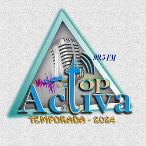
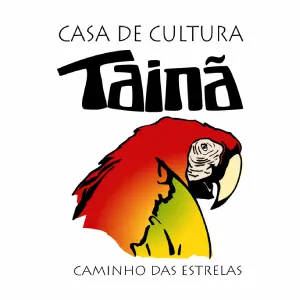
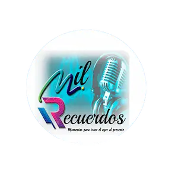

Radio Lynexus
La primera radio 24/7 de Empyria, con una seleccion musical diferente a las otras radios reales y los mejores programas acompañándote en este caotico mundo.

Radio Liberty
Radio Liberty, una emisora de Lynexus Multimedios dedicado a emitir musica antigua de los 20s, 30s, 40s, 50s y 60s.

FRECUENCIA 3
Una emisora dedicado a emitir la mejor musica de la decada de los 80s y 90s operado en la Frecuencia 3 del dial.

FRECUENCIA 4
La cuarta emisora

FRECUENCIA 5
J-Pop, J-Rock, City Pop y musica japonesa en general.

Radio Lynexus: Archivos
Frecuencia 6 - Archivos de Radio Lynexus

Radio Top Activa 99.5 FM
Radio Top Activa broadcasts on 99.5 FM from Challapata, Bolivia.

Radio Mocambos
Casa de Cultura Tainã is a non-profit cultural and social entity.

Radio Mil Recuerdos
Memories that live through time in Guayaquil.